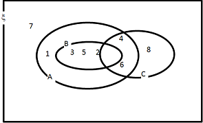
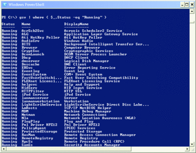
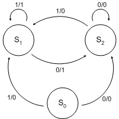
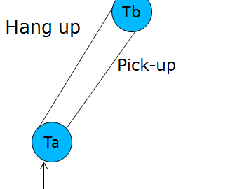
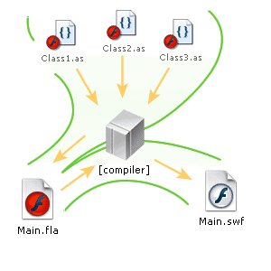

Logic and Computation
The Logic and Computation module aims to introduce students to key novel computational paradigms starting with basic logic programming using PROLOG and expanded through the use of models of uncertainty. This will be accompanied by techniques such as compiler principles applied to modern formats/techniques such as XML, Turing Machines and more advanced computational techniques such as agent-based processing models, and Artificial Intelligence approaches such as Neural Networks and Genetic Algorithms.
Topics
Sets Theory
A Basic mathematic concept
Lists
A Basic computer data structure
Graph Theory
A method to represent solution in computer science

State Transition Diagram
Illustrate the principles of State Transition Diagram
Finite State Machine
Finite State Machine is State Transition Diagram in formal mathematical definition
Compilers
To learn the construction of syntax in computer language
